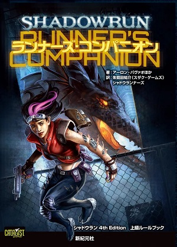

Shadowrun Books
There is a long, rich history of Shadowrun books still available in e-book and print forms. While some rulebooks may no longer apply, the vast majority of the sourcebooks published for Shadowrun are still relevant.
To immerse you into the awful world of shadowrun, The different categories of books are listed below to peruse at your own (p)leisure. (I am only familiar with the novels so content ahead is directly sourced from Catalyst Games and not-so-neatly adapted here, beware poor grammer)
Getting Started
If you’re new to Shadowrun, dive into the free Quick-Start Rules PDF to get a quick taste of the universe and rules of the tabletop version. Once you’ve wetted your appetite, the Fifth Edition Rulebook is the single source you need to dive into all the action, intrigue and magic of all the Sixth World has to offer.
Core Rulebooks
These Core Rulebooks expand on the various aspects found in the previous Fourth Edition Rulebook, providing a plethora of options: more guns, vehicles, and drones; more cyberware, bioware and new nanotechnology; more magic and the metaplanes; new hacking tricks and sprites; more character optio. Plus a host of optional rules for any character type. Catalyst Games may publish new core rulebooks supporting Fifth Edition in the future.
Core Supplements
The Shadowrun universe is vast, with a depth that’s compelling and immersive. Core Supplements expand various aspects of the universe, whether it’s the core setting location of Seattle, the spirits and paranormal animals that occupy the Sixth World, what’s like to walk the streets out of the shadows, and more.
Deep Shadows Sourcebooks
Deep Shadows combines a large detailed setting, universe-advancing plot lines, and advanced and specialized gear information in one book to give players and gamemasters a whole host of new options to use in their campaign; plot hooks allow for a myriad ways to tailor the contents to a host of game types.

Setting Sourcebooks
Though Seattle is the primary location of Shadowrun, the world is large, with a hundred sprawls and and just as many corporations spreading shadows where a runner can find work. Setting Sourcebooks flesh-out the details for cities and countries around the globe, offering additional locals for the team eager to see what’s in the shadows over there.
Plot Sourcebooks
The Shadowrun universe is not static. Instead, it’s a dynamic, changing universe, with a host of plot threads of intrigue that weave through-out the Sixth World. Plot Sourcebooks expand upon existing threads or introduce new threads, pushing the universe forward and providing players with new and exciting concepts for their campaigns.
Adventures
Catalyst publishes several ready-made adventures that offer the non-layer character statistics, hand-outs, maps, setting information, and plot points needed for gamemasters to take players through exciting runs; the specifics details of what setting, which plot points, and so on, are dependent upon the adventure in question.
Campaigns
Campaigns have a simple goal: give players and gamemasters what they need to be immersed in ongoing Shadowrun plotlines while providing the tools needed to run a game easily. The books are designed to combine useful game information with compelling in-universe storytelling to give Shadowrun players everything they need to rush into danger.
Fiction
Fiction has always played a seminal part in developing and fleshing-out the Shadowrun universe, from short fiction in sourcebooks, to full-length novels; nothing works as well to immerse a player into the Sixth World. Catalyst Game Labs is releasing brand new fiction, while also starting to make available all previously published novels in epub format.
The fictional book were created by formerly FASA and currently Wizkids I only have reading experience with the formerly, more specifically the Secrets of Power trilogy by (Robert N Charette?) I have read Mercy Strret, a new shorter novel and it read well so... yeah if you wanna know where to start click on one of these images.
E-books
Beyond the printed rulebooks and source material for Shadowrun, Catalyst is releasing numerous electronic publications that further expands the universe and rules in a myriad directions. These new, Ebook-only published products offer a quick, easy fix for the shadowrunner jonsing for more of the Sixth World they crave.
Out-Of-Print Books
With twenty years of history, Shadowrun has dozens and dozens of rulebooks, sourcebooks, and adventures that are long out of print. While many of those books have updated versions currently in print, for long years most of that material simply was unobtainable. Now those books are once more available, in PDF format, for use by any player or gamemaster.